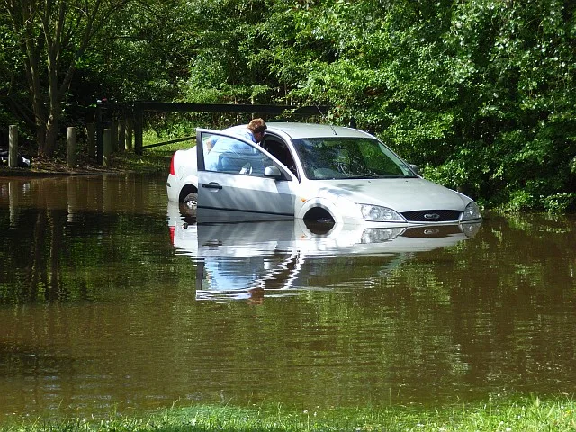
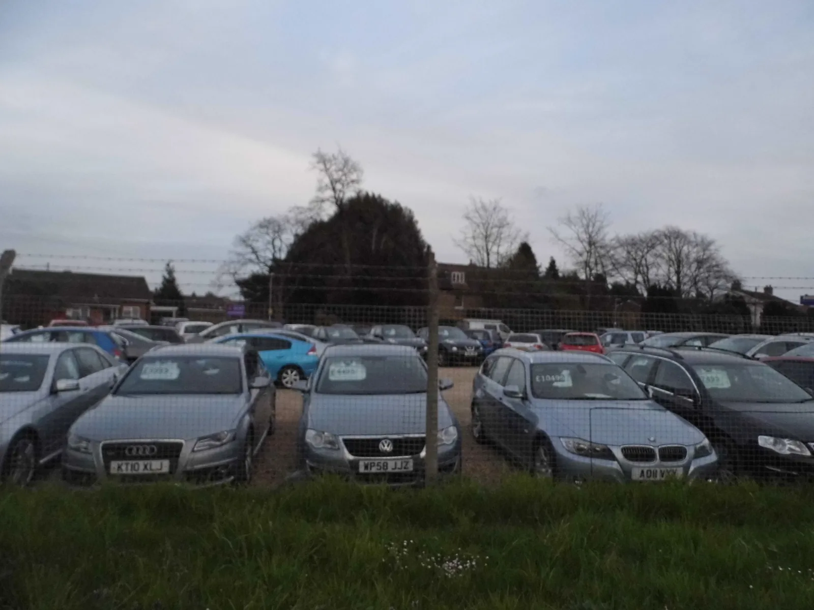
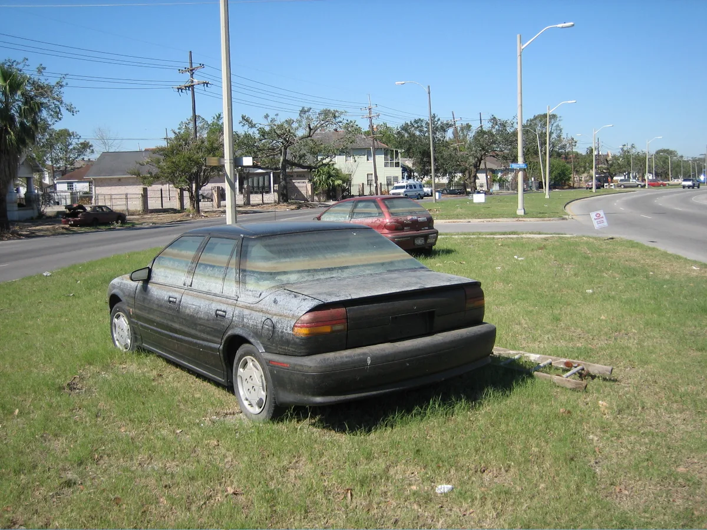
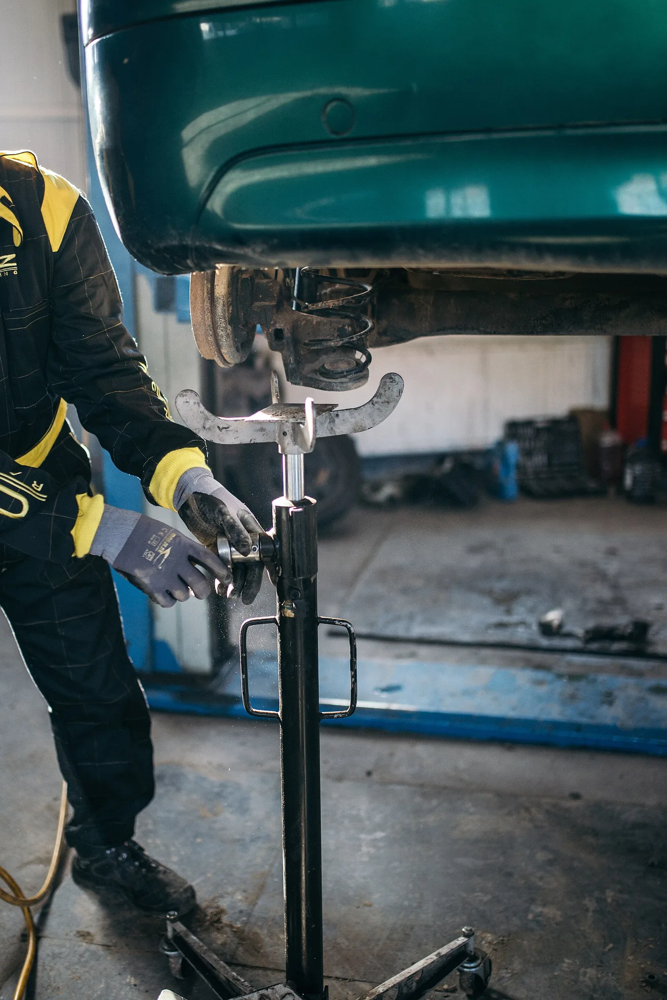
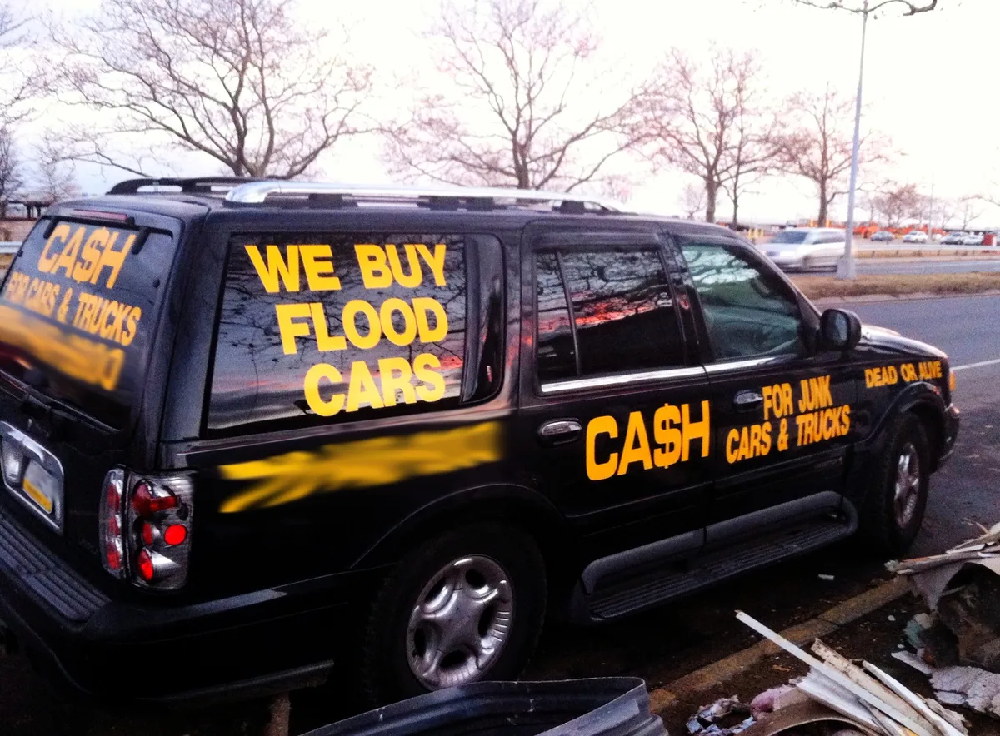

▲ 물에 잠긴 차는 보험 처리 여부에 따라 전손으로 빠지기도 하고, 수리 후 시장에 다시 나오기도 한다 ⓒ Andrew Smith, Wikimedia Commons (CC BY-SA 2.0)
장마철마다 반복되는 질문이 있습니다. "지금 중고차 사도 되나."
이 불안이 숫자로 확인됐습니다. 리본카가 성인 남녀 303명에게 물었더니, 76.2%가 침수차 걱정 때문에 구매를 망설인 경험이 있다고 답했습니다.
더 눈에 띄는 것은 다른 항목이었습니다. 구매 판단 기준을 물었더니 "정보의 투명한 공개"가 36.0%로 1위였고, "가격 합리성"은 4.9%에 그쳤습니다.
1. 숫자가 말하는 것 — 가격은 4.9%였다
설문 결과를 항목별로 보면 방향이 분명합니다.
| 항목 | 응답 |
|---|---|
| 장마철 중고차 구매 시 가장 큰 걱정 — 침수차 여부 | 50.2% |
| 침수차 피해 가능성 우려 | 76.0% |
| 침수차 걱정으로 구매를 망설인 경험 | 76.2% |
| 환불·보상 정책이 불안을 줄여준다 | 78.5% |
소비자가 요구한 것은 순서대로 이렇습니다.
- 침수·사고 이력 투명 공개 — 69.0%
- 성능·상태 점검기록부 제공 — 60.7%
- 환불·보증 등 사후 보호 정책 강화 — 55.1%
- 자체 진단·인증 강화 — 48.2%
그리고 결정적인 대비. 구매 판단에서 "차량 정보의 투명한 공개"가 36.0%로 1위였는데, "가격 합리성"은 4.9%였습니다. 7배 이상 차이입니다.
가장 신뢰하는 구매 방식은 직영인증중고차(44.6%)와 제조사 인증 중고차(34.7%)였습니다. 조사 주체가 직영인증중고차 플랫폼이라는 점은 감안해서 읽을 필요가 있습니다.

▲ 구매 판단 기준은 정보 투명성 36.0%가 가격 합리성 4.9%를 크게 앞섰다 ⓒ David Howard, Wikimedia Commons (CC BY-SA 2.0)
2. 침수차가 위험한 진짜 이유
"말려서 쓰면 되지 않나"는 오해입니다. 물이 들어간 차가 위험한 이유는 즉시 고장 나지 않는다는 데 있습니다.
- 전장 부품의 지연 고장 — 커넥터 내부에 남은 수분과 이물질이 수개월에 걸쳐 접점을 부식시킨다. 어느 날 갑자기 계기판이 꺼지거나 시동이 안 걸린다.
- 에어백 제어기 — 침수 이력이 있으면 충돌 시 전개 실패 가능성이 생긴다. 육안으로 확인이 어렵다.
- 차체 부식 — 실내 바닥재 아래 강판이 안에서부터 녹슨다. 겉은 멀쩡하다.
- 곰팡이와 냄새 — 시트 스펀지와 흡음재는 완전 건조가 어렵다.
전기차와 하이브리드는 항목이 하나 더 붙습니다. 고전압 배터리와 케이블에 물이 닿았다면 절연 저항이 문제가 됩니다. 이 경우 수리보다 전손 처리되는 사례가 많습니다.

▲ 유리창에 남은 흙탕물 수위선. 실내에 물이 어디까지 찼는지를 그대로 보여준다 ⓒ Infrogmation, Wikimedia Commons (CC BY-SA 3.0)
3. 매물에서 직접 확인하는 순서
서류 확인이 먼저, 실물 확인이 다음입니다. 순서를 바꾸면 시간만 씁니다.
1단계 — 서류
- 자동차대여사업용·보험개발원 카히스토리 — 침수 전손·분손 이력을 조회한다. 보험 처리된 침수만 잡힌다.
- 성능·상태 점검기록부 — 침수 여부 항목이 별도로 있다. 표기 자체를 확인한다.
한계가 있습니다. 보험 처리를 하지 않고 자비로 수리한 침수차는 기록에 남지 않습니다. 그래서 실물 확인이 필요합니다.
2단계 — 실물
- 안전벨트를 끝까지 뽑아본다 — 벨트 안쪽 끝단에 얼룩이나 흙 자국이 있으면 의심. 리트랙터 안쪽까지 세척하는 경우는 드물다.
- 시트 레일과 볼트 — 시트를 앞뒤로 밀고 레일 홈에 낀 진흙과 녹을 본다.
- 트렁크 스페어타이어 공간 — 바닥이 깊어 물이 마지막까지 남는 곳이다. 매트를 들춰본다.
- 퓨즈박스와 커넥터 — 단자에 흰 가루(부식 산화물)가 보이면 위험 신호.
- 실내등·도어 트림 안쪽 — 손이 잘 안 닿는 구석에 물 자국이 남는다.
- 냄새 — 방향제 냄새가 유독 강하면 무언가를 덮고 있을 가능성을 고려한다.
가장 확실한 방법은 리프트에 올려보는 것입니다. 하부 부재의 부식 상태는 위에서 보이지 않습니다. 제3의 정비소에서 유상 점검을 받는 비용은 침수차를 잡는 값으로는 저렴한 편입니다.

▲ 하부 부재의 부식은 위에서 보이지 않는다. 제3의 정비소 유상 점검이 가장 확실한 방법이다 ⓒ Shixart1985, Wikimedia Commons (CC BY 2.0)
4. 침수차는 어디로 가나
침수차가 전부 폐차되는 것은 아닙니다. 유통 경로는 대략 이렇습니다.
- 전손 처리 → 폐차 — 보험사가 차량가액 이상으로 판단하면 전손 처리하고 폐차 절차를 밟는다.
- 전손 처리 → 부품 회수 — 침수되지 않은 부위의 부품이 재활용된다.
- 분손 수리 → 재유통 — 수리 후 다시 시장에 나온다. 기록에는 남는다.
- 보험 미처리 수리 → 재유통 — 기록에 남지 않는다. 이것이 가장 위험한 경로다.
마지막 경로가 문제입니다. 자기부담금이나 보험료 할증을 피하려고 자비로 수리하면, 공적 기록 어디에도 침수 사실이 남지 않습니다.
그래서 설문 응답자의 78.5%가 "환불·보상 정책"을 꼽은 것입니다. 사전에 걸러낼 수 없다면, 사후에 되돌릴 수 있는 장치를 요구하게 됩니다.
계약 전 확인할 것은 이렇습니다.
- 침수 발견 시 환불 조항이 계약서에 있는가
- 환불 기한이 며칠인가 — 며칠 안에 확인해야 하는지
- 보증 범위에 전장 부품이 포함되는가 — 침수 후유증은 대부분 전장에서 나온다

▲ 침수차를 사들이는 전문 매입 업체는 어느 시장에나 존재한다. 문제는 그 뒤의 행선지다 ⓒ Roman Iakoubtchik, Wikimedia Commons (CC BY-SA 2.0)
5. 정리
리본카가 성인 남녀 303명을 대상으로 2026년 6월 진행한 설문에서, 76.2%가 침수차 걱정으로 중고차 구매를 망설인 경험이 있다고 답했습니다.
구매 판단 기준은 정보의 투명한 공개(36.0%)가 가격 합리성(4.9%)을 크게 앞섰고, 요구사항 1순위는 침수·사고 이력 투명 공개(69.0%)였습니다.
실무적으로는 카히스토리와 성능점검기록부를 먼저 보고, 실물에서는 안전벨트 끝단, 시트 레일, 트렁크 스페어타이어 공간, 퓨즈박스 부식을 확인하는 순서가 효율적입니다. 보험 미처리 수리 차량은 기록에 남지 않는다는 점이 가장 큰 사각지대입니다.